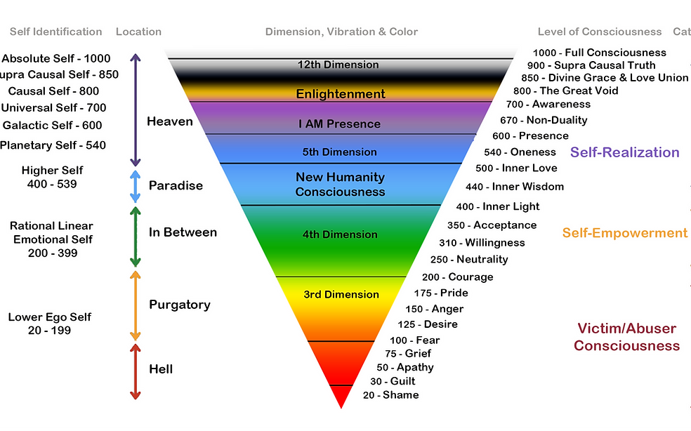

We become what we think. Positive thoughts create clarity, peace, emotional balance, and a deeper connection with ourselves and the world around us.

Small changes in thinking can transform the way we experience life, relationships, emotions, and inner peace.
Every person is fighting their own internal battles. Compassion and understanding create harmony and reduce negativity within ourselves.
Perceive and accept situations as they truly are instead of constantly wishing them to be different. Acceptance creates peace.
Express gratitude daily for what you already have. Gratitude shifts the mind from lack to abundance and happiness.
Move away from the victim-abuser mindset towards self-realization and awareness. Overcome desire, anger, pride, fear, and grief through courage and acceptance.
Explore the Levels of Consciousness developed by Dr. David Hawkins to better understand emotional and spiritual growth.
The present moment is where peace exists. Slow down, breathe deeply, and experience life with awareness and calmness.
Positive thinking is not about ignoring life's challenges. It is about responding with awareness, acceptance, courage, and gratitude.
Begin Your Wellness Journey →